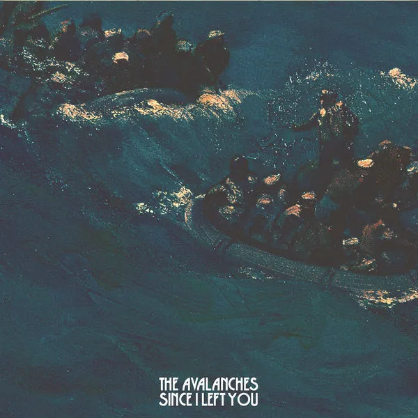
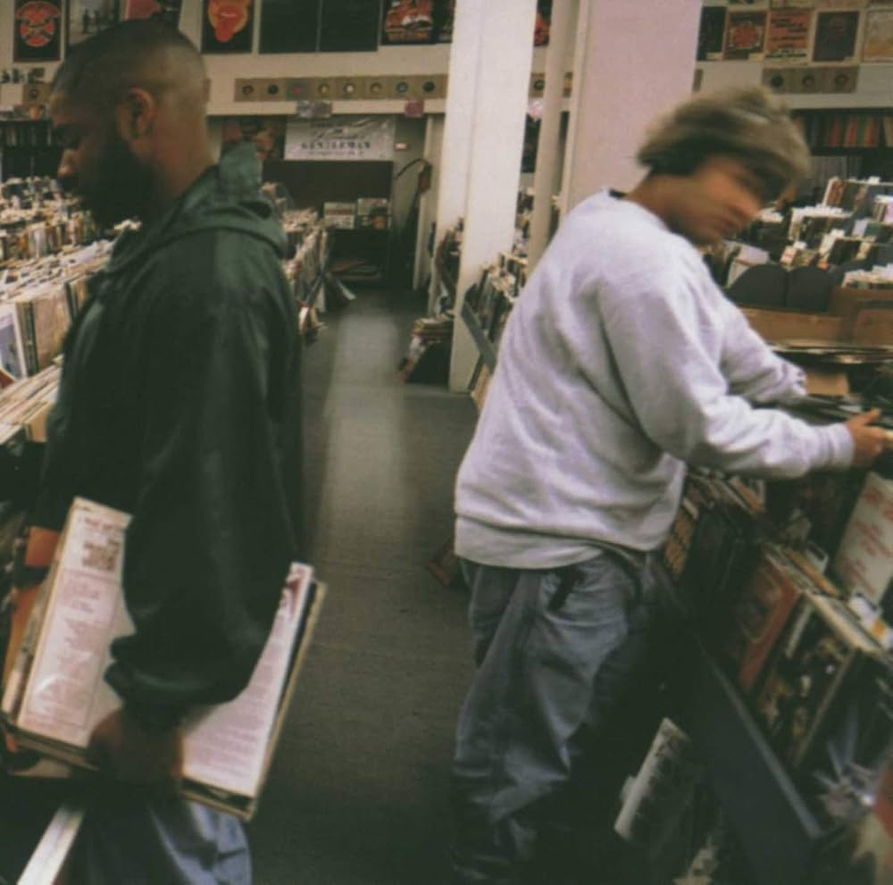

My Favorite albums



Since I Left You
Total Time: 60:39
Artist/s: The Avalanches
Release:2000
Top Tracks
- Two Hearts in 3/4 Time 3:23
- A Different Feeling 4:22
- Since I Left You 4:22
Modjo (Self Titled)
Total Time: 51:43
Artist/s: Modjo
Release:2001
Top Tracks
- Lady (Hear Me Tonight) 3:05
- Music Takes You Back 4:13
- Chillin' 4:52
Endtroducing
Total Time: 63:23
Artist/s: DJ Shadow
Release:1996

Top Tracks
- Mutual Slump 4:02
- Midnight In A Perfect World 4:57
- What Does Your Soul Look Like, Pt. 4 5:08